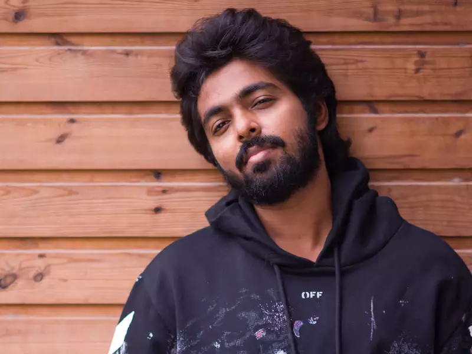
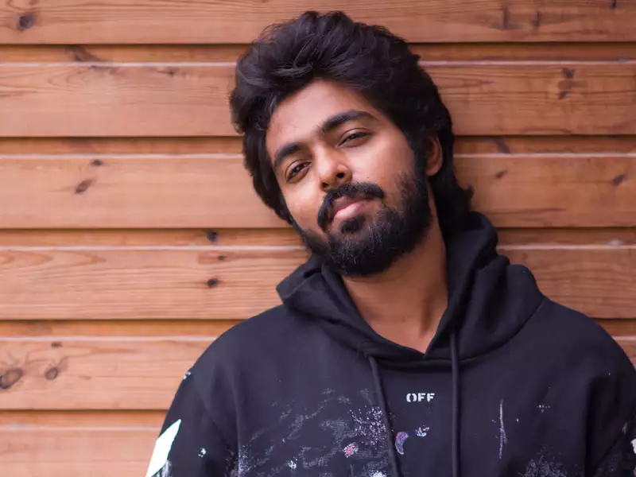
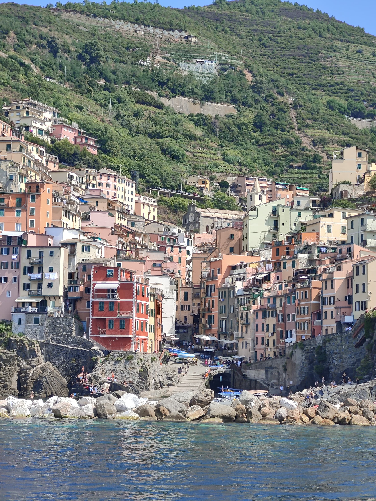

Spiking Success: Nine Years of Volleyball Mastery
For over 9 years, I've soared on the courts, weaving my passion through each spike and dig, now proudly representing Villejuif's regional team with every spirited play.

 


Melodic Odyssey: Embracing Diversity in Music Beyond Ratings and Borders
Navigating melodies like uncharted territories, I embrace every genre, language, and hidden gem of artists, discovering musical landscapes beyond the confines of ratings and acclaim.


Wanderlust Chronicles: Unveiling the World Through My Travel Adventures
Exploring the world fuels my soul, as I chase adventures across continents, cultures, and horizons.